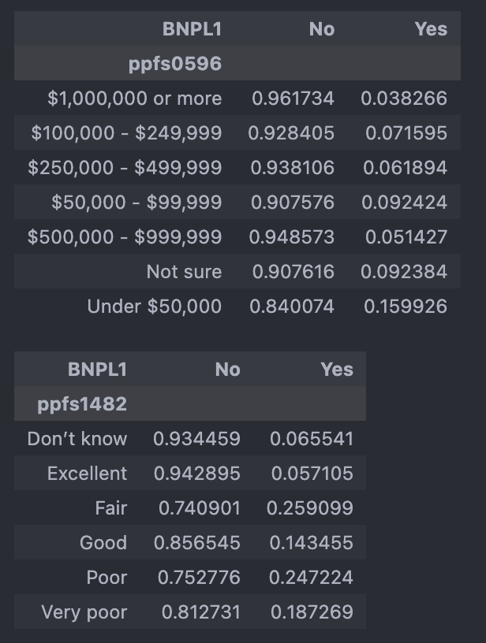
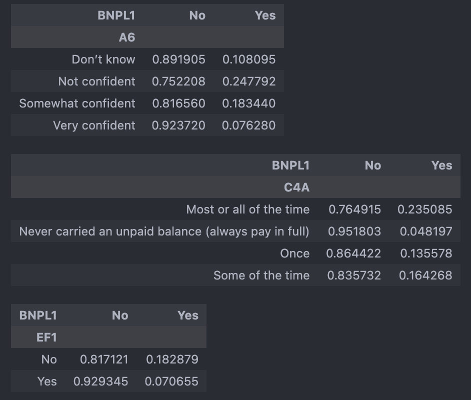
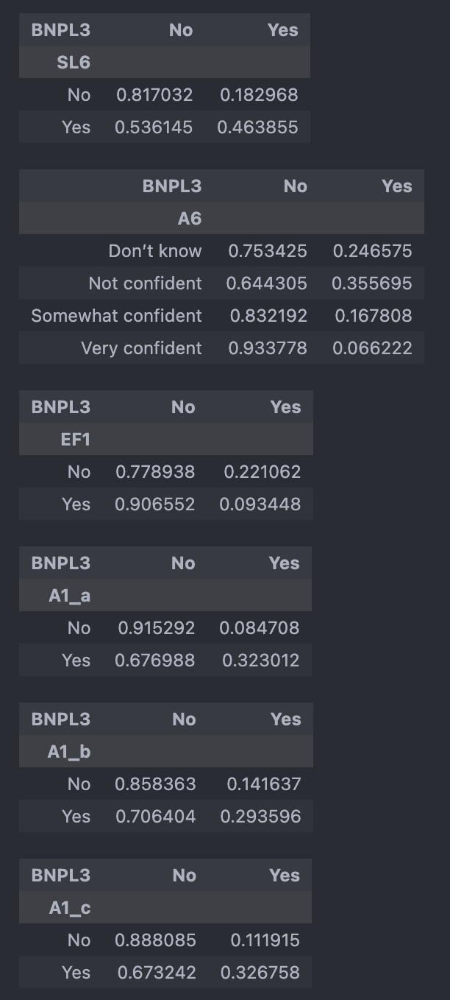
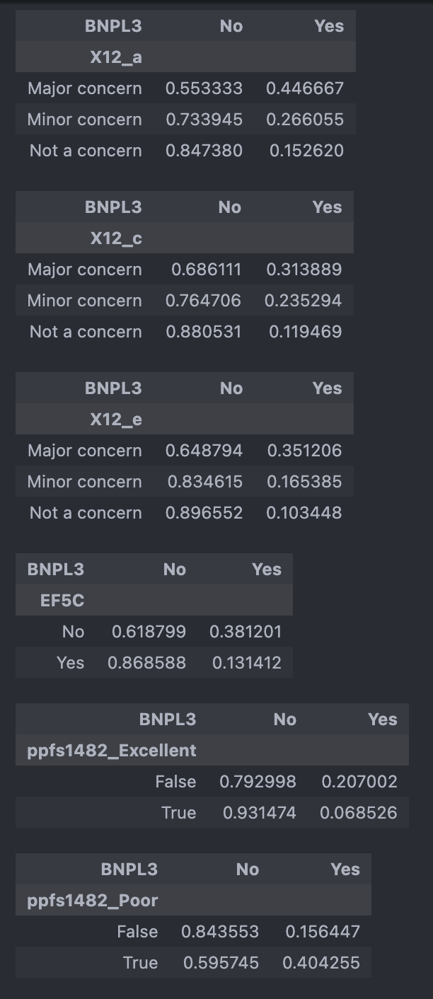

Codebook
Here are all of the variables shared across the four surveys. I verified that the codes correspond to the same questions in each version. Some items, such as BNPL 4 represent multiple responses to a single question and thus take up more than one column.
Independent variables candidates - Demographics and general questions
| Variable name | Description |
|---|---|
| A6 | If you were to apply for a credit card today, how confident are you that your application would be approved? |
| B3 | Compared to 12 months ago, would you say that you (and your family) are better off, the same, or worse off financially? |
| BNPL1 | In the past year, have you used a “Buy Now Pay Later” service to buy something? |
| BNPL3 | In the past year, have you ever been late making a payment for something you bought using a Buy Now Pay Later service? |
| C4A | In the past 12 months, how frequently have you carried an unpaid balance on one or more of your credit cards? |
| EF1 | Have you set aside emergency or rainy day funds that would cover your expenses for 3 months in case of sickness, job loss, economic downturn, or other emergencies? |
| I20 | In the past month, would you say that your and your spouse’s or partner’s total spending was more or less than your income? |
| I41_c | In the past 12 months, have you or your spouse recieved Women, Infants, and Children (WIC) nutrition program benefits? |
| I41_e | In the past 12 months, have you or your spouse recieved free or reduced price school lunches for your children? |
| L0C | How many children do you have who are under age 18 and currently live with you? |
| ppage | Age (discrete number of years) |
| ppagecat | Age (categorical, e.g. 18-24, 25-34, etc.) |
| ppethm | Race/ethnicity |
| ppeducat | What is your highest level of eductation? |
| ppemploy | Current employment status |
| ppfs0596 | What is the approximate total amount of your household’s savings and investments? |
| ppfs1482 | Where do you think your credit score falls? |
| pphhsize | Household size |
| ppinc7 | Total household income (categorical, e.g. $10K-$24,999, $25K-$34,999) |
| ppkid017 | Presence of children in the household |
| ppmarit5 | Marital status |
| SL6 | Are you behind on payments or in collections for one or more of the student loans from your own education? |
| EF1 | Have you set aside emergency or rainy day funds that would cover your expenses for 3 months in case of sickness, job loss, economic downturn, or other emergencies? |
| EF5C (available 2023-2024 data) | Other than any credit card bills you may have, did you pay all your bills in full last month? |
EF3a-h are all possible responses to the following question: Suppose that you have an emergency expense that costs ($400/$500). Based on your current financial situation, how would you pay for this expense?
| Variable name | Description |
|---|---|
| EF3_a | Put it on my credit card and pay it off in full at the next statement |
| EF3_b | Put it on my credit card and pay it off over time |
| EF3_c | With the money currently in my checking/savings account or with cash |
| EF3_d | Using money from a bank loan or line of credit |
| EF3_e | By borrowing from a friend or family member |
| EF3_f | Using a payday loan, deposit advance, or overdraft |
| EF3_g | By selling something |
| EF3_h | I wouldn’t be able to pay for the expense right now |
X12a-g (only available for 2024 data) are all possible responses to the following question: Are each of the following a financial challenge or concern you or your family?
| Variable name | Description |
|---|---|
| X12_a | Finding or keeping a job |
| X12_b | Increases in prices for things you buy |
| X12_c | Housing costs or availability |
| X12_d | Retirement savings |
| X12_e | Making ends meet |
| X12_f | Medical debt or affording medical care |
| X12_g | Student loans or education costs |
A1a-c are all possible responses to the following question: In the past 12 months, has each of the following happened toyou?
| Variable name | Description |
|---|---|
| A1_a | Turned down for credit |
| A1_b | Approved for credit, but were not given as much credit as you applied for |
| A1_c | Put off applying for credit because you thought you might be turned down |
BNPL 4a-4f are all possible responses to the following question: Thinking about the most recent time you used a Buy Now Pay Later service, why did you choose to finance the purchase in this way?
Note: only some of these are available in the 2021 dataset. The 2021 codebook includes 4b, 4c, and 4d. |Variable name|Description| |—|—| |BNPL4_a|Avoid interest charges| |BNPL4_b|Wanted to spread out payment| |BNPL4_c|Wanted a fixed number of payments| |BNPL4_d|Convenience| |BNPL4_e|Only way I could afford it| |BNPL4_f|Only accepted payment method I had|
High correlation columns
- With BNPL1:
| Variable | Question | Category | Correlation with BNPL1 | Spearman corr (p) | Chi^2 (p, cramers_v) |
|---|---|---|---|---|---|
| ppfs0596 | Household income and investment | -0.157546 (2.101884e-168) | 785.899053 (1.714126e-166, 0.157056) | ||
| ppfs1482 | Where do you think your credit score falls? | 2095.860225 (0.000000e+00, 0.228806) | |||
| ppage | age | -0.129598 (5.249315e-176) | |||
| A6 | Confidence of credit card application approval | 1807.429243 (0.000000e+00 0.195611) | |||
| C4A | Frequency carried an unpaid balance on credit cards | 2409.108407 (0.000000e+00 0.244392V) | |||
| EF1 | Have you set aside emergency funds? | 1395.318197(2.186735e-305 0.171870) | |||
| A1_a | Turned on for credit in past 12 months | 1028.181904 (1.344683e-225 0.249273) | |||
| A1_b | Approved for credit, but were not given as much credit as you applied for in the past 12 months | 774.527515 (1.863587e-170 0.216351) | |||
| A1_c | Put off applying for credit because you thought you might be turned down in the past 12 months | 954.507724 (1.389561e-209 0.240176) | |||
| X12_e | Making ends meet - Are each of the following a financial challenge or concern for you or your family? | 228.753785 (2.122007e-50 0.193255) | |||
| ppfs1482_Excellent | where do your credit score falls? | 1413.792239 (2.115226e-309 0.173004) | |||
| C4A_Most_or_all_of_the_time | In the past 12 months, how frequently have you carried an unpaid balance on one or more of your credit cards? | 1511.582349 (0.000000e+00 0.178887) | |||
| C4A_Never carried an unpaid balance (always paid in full) | In the past 12 months, how frequently have you carried an unpaid balance on one or more of your credit cards? | 1857.842534 (0.000000e+00 0.198321) |




- With BNPL3:
| Variable | Question | Category | Correlation with BNPL1 | Spearman corr (p) | Chi^2 (p, cramers_v) |
|---|---|---|---|---|---|
| I20 | Spending higher/lower/same as income | 153.998819 (3.627283e-34 0.167164) | |||
| ppeducat | Education | 127.669360 (1.719082e-27 0.152205) | |||
| ppfs0596 | Household income and investment | 785.899053 (1.714126e-166, 0.157056) | |||
| ppinc7 | Household income | -0.206426 (4.186553e-54) | 248.637921 (8.016644e-51 0.212407) | ||
| ppfs1482 | Where do you think your credit score falls? | 414.660244 (2.051954e-87 0.309423) | |||
| SL6 | Are you behind on payments or in collections for one or more of the student loans from your own education? | 109.305151 (1.391303e-25 0.268339) | |||
| A6 | Confidence of credit car approval | 527.580377(5.026688e-114 0.309406) | |||
| EF1 | Have you set aside emergency funds? | 141.565359 (1.210373e-32 0.160274) | |||
| A1_a | Turned on for credit in past 12 months | 293.640910 (8.002979e-66 0.301094) | |||
| A1_b | Approved for credit, but were not given as much credit as you applied for in the past 12 months | 103.896530 (2.131625e-24 0.179100) | |||
| A1_c | Put off applying for credit because you thought you might be turned down in the past 12 months | 223.091585 (1.914480e-50 0.262444) | |||
| X12_a | Finding or keeping a job - Are each of the following a financial challenge or concern you or your family? | 54.618626 (1.379482e-12 0.260156) | |||
| X12_c | Increases in prices for things you buy - Are each of the following a financial challenge concern for you or your family? | 28.956009 (5.155639e-07 0.189423) | |||
| X12_e | Making ends meet - Are each of the following a financial challenge or concern for you or your family? | 51.299939 (7.250364e-12 0.252128) | |||
| EF5C | Other than any credit card bills you may have, did you pay all your bills in full last month? | 230.371682 (4.946355e-52 0.271512) | |||
| ppfs1482_Excellent | Excellent credit scores | 127.502275 (1.442355e-29 0.152105) | |||
| ppfs1482_Poor | Poor credit scores | 164.054165 (1.472072e-37 0.172535) |


